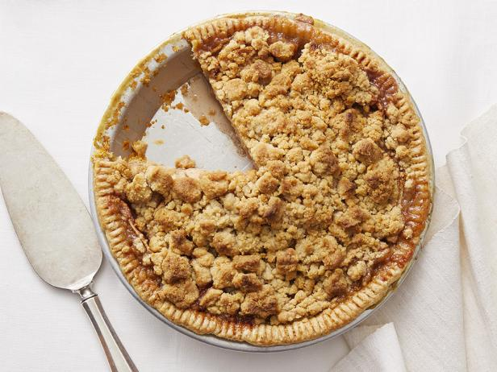

Apple Pie

A delicious apple pie topped with a crumbly crust.
A quick and easy apple pie with a classic taste that's hard to beat. Preparation and cooking should take a total of 1 hour and 10 minutes for about 8 servings of pie.
Ingredients
- 1 (9 inch) deep dish pie crust
- 5 cups of apples - peeled, cored and thinly sliced
- 1/2 cup white sugar
- 3/4 teaspoon ground cinnamon
- 1/3 cup white sugar
- 3/4 cup all-purpose flour
- 6 tablespoons butter
Directions
- Preheat oven to 400 degrees Farenheit.
- Arrange apple slices in unbaked pie shell. Mix 1/2 cup sugar and cinnamon; sprinkle over apples.
- Mix 1/3 cup sugar with flour; cut in butter until crumbly. Spoon mixture over apples.
- Bake in preheated overn until apples are soft and top is lightly browned, about 40 minutes.